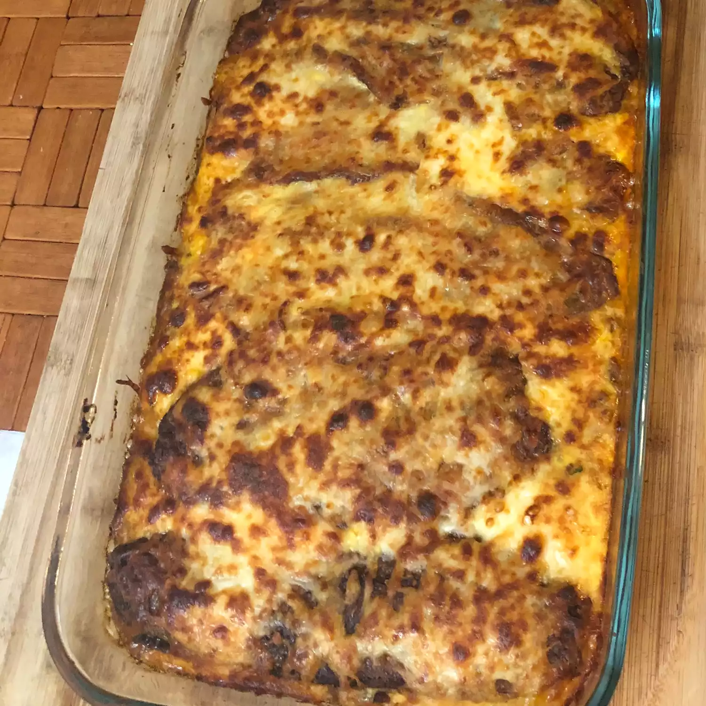

Puero Rican Shepherd Pie (Pastelon)
Original recipe from allrecipes Puerto Rican Shepherd Pie (Pastelon)
This page is for Practice only.

Shepherd pie is a hearty meal. Adding a Puerto Rican influence can only make it better.
Ingredients:
- 1 onion, cut into chunks
- 1 green bell pepper, cut into chunks
- 1 bunch fresh parsley
- 1 bunch fresh cilantro
- 1 bunch culantro
- 3 cloves garlic
- 1 tablespoon water, or as needed
- 1 pound ground beef
- 1 (1.41 ounce) package sazon seasoning
- ground black pepper to taste
- 1 pinch adobo seasoning, or to taste
- olive oil
- 8 ripe plantains, peeled and cut on the bias
- 4 eggs, beaten
- 2 (15 ounce) cans green beans, drained
Directions
- To make sofrito: Place the onion, bell pepper, parsley, cilantro, culantro, garlic, and water into a blender. Cover, and puree until smooth. Pour mixture into a bowl; cover and refrigerate until ready to use.
- Heat a large skillet over medium-high heat and stir in the ground beef. Cook and stir until the beef is crumbly, evenly browned, and no longer pink. Stir in 2 tablespoons of sofrito into the beef, then season with sazon, pepper, and adobo. Drain and discard any excess grease; set aside.
- Preheat an oven to 350 degrees F (175 degrees C).
- Heat a skillet over medium heat. Arrange the plantains in the skillet and pan fry until golden and softened, 3 to 5 minutes. Remove from heat. Layer half of the plantains in a deep baking dish, making sure to cover the entire bottom of the dish. Pour 4 beaten eggs over the plantains, then spread the beef on top. Layer the green beans over the beef, then arrange the remaining plantains on top. Pour 4 more beaten eggs evenly over the plantains. Sprinkle the top with adobo seasoning.
- Bake in the preheated oven until the eggs are firm, 30 to 45 minutes.